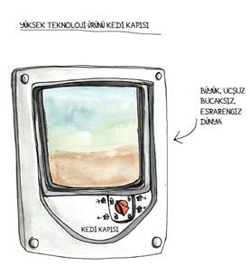
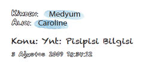

2
Gediniz kaybolduğunda paniğe kapılıyorsunuz. Kedi kaçıranlar, hayvanları canlı canlı kesip üstlerinde deney yapanlar geliyor aklınıza. Hayvanınızın kısılıp kaldığı deliği, sürünerek eve gelmesini engelleyen yaraları kafanızda canlandırıyorsunuz.
Ağlıyorsunuz.
Çok çaresiz durumda olduğum için arkadaşlarım hemen imdada yetişti. Mahalleyi el ilanlarıyla donattılar, kapıları çaldılar. Bütün posta kutularına, üstünde KAYIP KEDİ, LÜTFEN ARAYIN, SAHİBİ ÇOK ÜZGÜN! yazılı ağlamaklı ricalar bırakıldı. Tibby’nin kocaman, ıslak uzaylı gözleri telefon telefon direklerinden, sokak lambalarından ve ağaçlardan etrafa bakıyordu. On gün geçti. Hiçbir şey olmadı. Neler dönmüştü acaba? Evimde on üç yıldır Tibby ile Fibby’nin bir zarar görmeden girip çıktıkları bir kedi kapısı vardı. Ön taraftan dar bir sokak geçiyordu, ama kedilerimi hiç orada görmemiştim, hem zaten neden sokağa çıkacaklardı ki? Kedi kapısı arka bahçeme açılıyordu, oradan da sokaktaki bütün evlerin arka bahçelerine geçilebilirdi. Bol yapraklı, sık yeşillik sırası bir kediciğin isteyebileceği her şeyi sunuyordu: tırmanacak ağaçlar ve çitler, içinde yuvarlanıp her tarafı koklanacak toprak, yakalayacak kemirgenler, yemek için çimen.
Kediler-Evden-Dışarı-Çıkmaz Birliği zaferini sessizce kutluyordu. Kediciklerin kendi güvenlikleri için evde tutulmaları gerektiğini söyleyerek beni azarlayıp dururlardı; ben de karşılığında dudak bükerdim.
Tabii, derdim, eve kilitlenen herkes daha uzun yaşar, ama sağlıklı da olamaz, mutlu da. Sürüp giden bir tartışmaydı bu, taraflar çeneleri kilitlenmiş, ses tonlarından haklılık akarak köşelerinde zıplayıp caka satardı. İşte şimdi Tibby kayıptı. Kediler-Evden-Dışarı-Çıkmaz Birliği’nden bir kedi sahibi kemikli parmağını bana doğru sallamak üzere eve gelseydi, hâlâ onun yanıldığını düşünürdüm. Ama yine de gözyaşları içinde ayaklarının dibine çökerdim.

Çaresizlik içinde, bir medyuma başvurdum. Bu medyum, hayalimdeki medyumlara benzemiyordu. Ne kocaman yüzükler takıyordu ne de gözlerini kısarak bir kristal küreye bakıyordu. Saçları modaya uygun kesilmişti, üstünde yoga giysileri vardı ve e-posta kullanıyordu. Ben de Tibby’nin kaybolmasının ayrıntılarını ona e-postayla gönderdim zaten. Meseleyle bağlantı kurmak için biraz zamana ihtiyacı olduğunu söyledi, bekledim. Çok geçmeden medyum yeni bir e-posta gönderdi. Tibby iyi, yazmıştı, perşembe günü sabaha karşı beşte eve dönecek. Bunların hepsini büyük bir açıklıkla gördüğünü söylüyor ve Tibby için endişelenmeme gerek olmadığını belirtiyordu. Ayrıca, civardaki çocukların Tibby’ye sevgiyle baktığını da eklemişti.

Merhaba Caroline,
-Tibby güvende, yaralı da değil. Yemek de yiyor, aslında bayağı iyi besleniyor. Bazı çocuklar bulmuş onu, büyük ihtimalle hafta sonu. Çocuklar 9-13 yaşları arasında. Tibby’yi alıp evlerine götürmüşler. Evet, onu bir garajda kapana sıkışmış halde değil de başka bir evde, bir aileyle birlikte görmemin kulağa tuhaf gelebileceğini kabul ediyorum. Küçük bir kız Tibby’nin kendi kedisi olduğunu düşünüyor, onu besliyor ve seviyor.
Bu gece dolunay ve ay tutulması var. Tibby yarın sabah, ay küçülmeye başladığında dönebilir.
-Onu ararken sana iyi eğlenceler. Tibby’yi eve neşeyle getir, korkuyla değil.
-Medyum
Not: Bütün bunları son derece açık biçimde gördüm. Tibby’nin şu andaki durumu bu değilse çok şaşıracağım.
Çocuklar ha! diye düşündüm. Tibby çocuklardan ölesiye korkar! Ama derin bir nefes alıp bekledim. Kesin tarih ve saat tahmini yapan bir medyuma hayranlık duydum. Kadın o kadar emindi ki söylediklerinin doğruluğundan. Ne var ki perşembe geldi geçti. Tibby görünmedi. Hafta sonu da dönmedi, pazartesi de.
Wendy yeniden mahallede dolaştı, karşısına çıkan herkese Tibby’nin fotoğraflarını gösterdi. İnsanlar anlayışla başlarını sallayıp onu görmediklerini söylediler, ama yakınlarda bir sokak kedisi çetesi olduğundan bahsettiler. Tibby onların arasında olabilir miydi? Pek sanmıyordum. Tibby’nin köşebaşlarında karton kutulardan şarap içen, patileriyle çete işaretleri yapan çetinceviz serseri kedilerle takıldığını hayal edemiyordum. İmkansızdı bu. Wendy yine de sokak kedisi çetesinin yanına gidip Tibby’yi çağırdı. Boşuna.
Sonunda ellerimi bitiştirdim ve Tanrı’ya bu konudaki fikrini sordum. Aynı zamanda Allah’a, Buda’ya, Toprak Ana’ya ve Muhteşem Kozmik Enerji’ye de danıştım. Hiçbirine inanmıyordum, ama çaresizdim. “Tanrı, Allah, Buda, Toprak Ana, Muhteşem Kozmik Enerji. Tibby nerede? Güvende mi?”
Sessizlikten başka bir cevap yoktu.